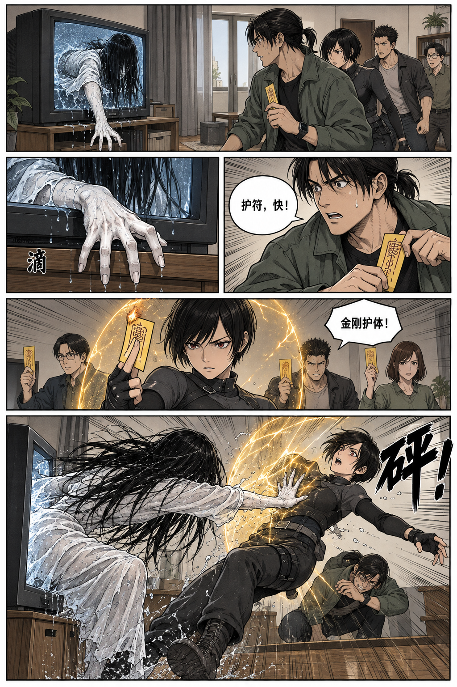
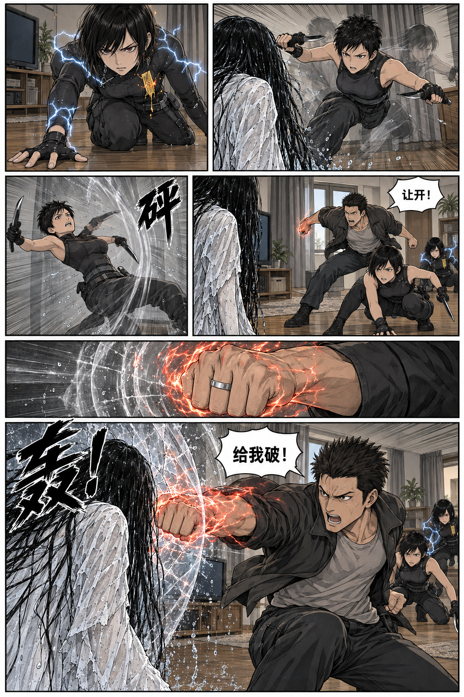
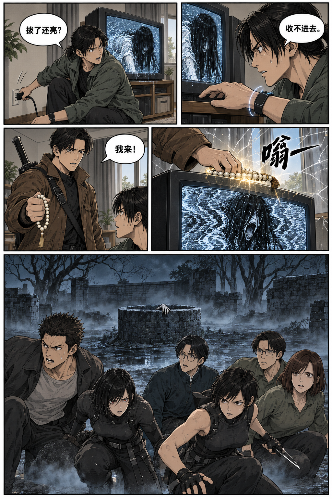
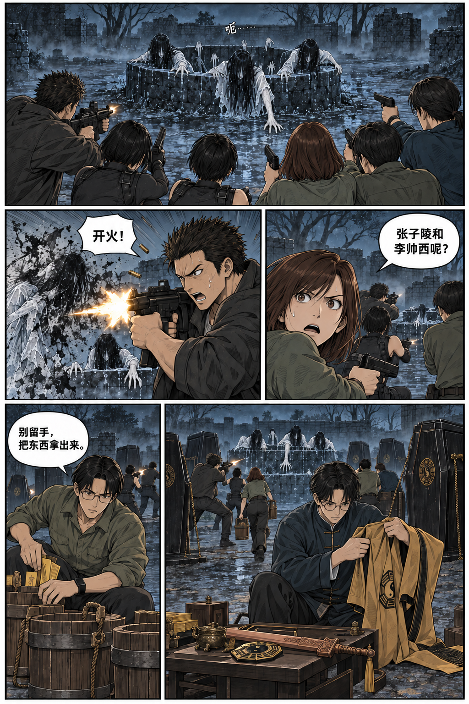
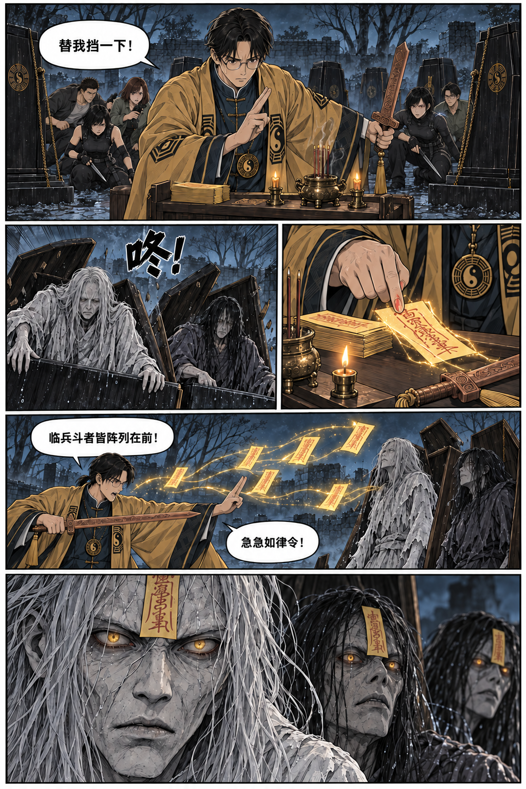
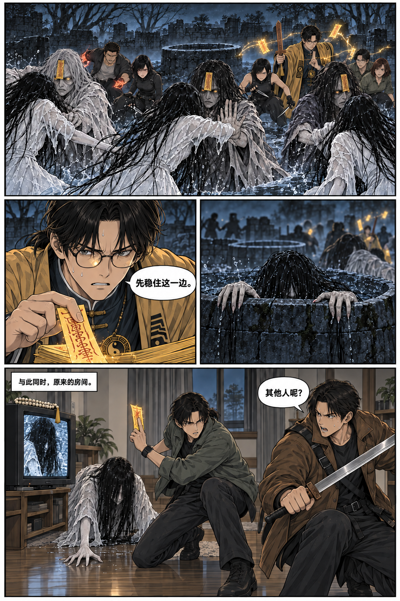

<!doctype html>
<html lang="zh-CN"><meta charset="utf-8"><meta name="viewport" content="width=device-width,initial-scale=1">
<title>无限异常 · 古井战斗漫画样张</title>
<style>*{box-sizing:border-box}body{margin:0;background:#171b1a;color:#e7e3d8;font:15px/1.7 system-ui,"Microsoft YaHei",sans-serif}header{max-width:1000px;margin:36px auto 24px;padding:0 20px}h1{font-size:24px;letter-spacing:2px;font-weight:500;margin:0 0 8px}p{color:#b7b9b2;margin:0 0 10px}nav{display:flex;gap:9px;flex-wrap:wrap}a{color:inherit;text-decoration:none;padding:3px 12px;border:1px solid #525c52;border-radius:3px}main{max-width:1024px;margin:auto}figure{margin:0 0 40px;scroll-margin-top:20px}figcaption{padding:8px 16px;color:#b7b9b2;font-size:13px}img{display:block;width:100%;height:auto}footer{text-align:center;padding:0 20px 32px;color:#979f95}@media print{body{background:white}header,footer,figcaption{display:none}figure{margin:0;break-after:page}main{max-width:none}img{height:98vh;object-fit:contain}}</style>
<header><h1>无限异常 · 古井战斗漫画样张</h1><p>六页连续彩色漫画。从左到右、从上到下阅读。</p><nav><a href="#p1">1 · 电视突袭</a><a href="#p2">2 · 近身交锋</a><a href="#p3">3 · 空间突变</a><a href="#p4">4 · 无穷分体</a><a href="#p5">5 · 控尸</a><a href="#p6">6 · 两处战场</a></nav></header>
<main><figure id="p1"><figcaption>01 / 电视突袭</figcaption></figure>
<figure id="p2"><figcaption>02 / 近身交锋</figcaption></figure>
<figure id="p3"><figcaption>03 / 空间突变</figcaption></figure>
<figure id="p4"><figcaption>04 / 无穷分体</figcaption></figure>
<figure id="p5"><figcaption>05 / 控尸</figcaption></figure>
<figure id="p6"><figcaption>06 / 两处战场</figcaption></figure></main>
<footer>故事依据用户提供片段演绎，截止于原片段的双战场悬念。内置 image_gen 生成。<br><a href="README.md">剧情记录与生成说明</a></footer></html>
